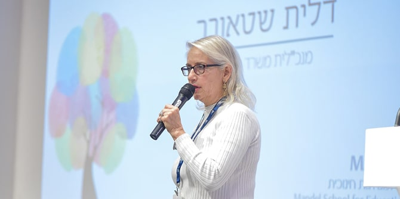

התרגיל הקבוצתי של מחזור כ"ט נערך בשיתוף עם האגף ליישום רפורמת ההכלה והשילוב במשרד החינוך ועם מינהל חינוך ירושלים (מנח"י)
מנכ"לית משרד החינוך, הגב' דלית שטאובר (צילום: נוה בן שמואל)
במסגרת התרגיל הקבוצתי שנערך השנה בשיתוף עם האגף ליישום רפורמת ההכלה והשילוב במשרד החינוך ועם מינהל חינוך ירושלים, חקרו עמיתי מחזור כ"ט במשך כחודש ימים את יישום חוק החינוך המיוחד שנועד להמשיך ולהגביר את תהליכי השילוב וההכלה של ילדים בעלי צרכים מיוחדים בבתי הספר הרגילים (עד כניסתו לתוקף הופנו התלמידים למוסדות חינוך השייכים לחינוך המיוחד).
במהלך התרגיל קיימו העמיתים תהליך למידה מעמיק שכלל עיון בספרות מחקר, סיורים במוסדות חינוך, מסמכים ודוחות רלוונטיים ועשרות ראיונות עם בעלי ובעלות תפקידים שונים בתחומים הנוגעים להכלה ולהשתלבות במערכת החינוך, בהם יו"ר ועדות אפיון, חברי הנהלה בכירה במשרד החינוך, הורים, סייעות, מנהלות בתי ספר ומורים, ומנהיגות ארגוני המגזר השלישי העוסקות בזכויות בעלי צרכים מיוחדים. בסיומו של תהליך הלמידה סיכמו העמיתים את המלצותיהם במסמך שנמסר לידי בעלי העניין.
בבסיס ההמלצות שעליהן מתבסס המסמך עומדת התפיסה שיש להעצים ולחזק את בית הספר הרגיל כמוסד חינוך מכיל, בעל יכולת מערכתית מיטבית להעניק שירותי חינוך מעולים לכלל הילדים – ובכלל זה לילדים עם צרכים מיוחדים. לשם מימוש תפיסה זו גיבשו העמיתים במסמך שלוש המלצות עיקריות: 1. חיזוק המומחיות והרחבת היכולות הפנימיות של כלל בתי הספר למשימות הכלה באמצעות גמישות ואוטונומיה ניהולית וכלכלית, הקמת מרכזי הכלה בית-ספריים, פיתוח מקצועי ויצירת מומחים לתחום ההכלה בבית הספר; 2. יצירת מודל תקצוב בית-ספרי תלוי "מדד הכלה" שיוביל לשינוי בעמדות בתי הספר כלפי משימת ההכלה. במסגרת המודל יצומצם מספר התלמידים בכיתות משלבות, יינתנו תמריצי מדידה והערכה ביחס למדד ההכלה, ויוקם מבנה דינמי לכיתות מכילות; 3. שינוי תנאי המגרש שבהם פועל בית הספר, כדי להרחיב את היכולות שלו ואת תפיסות ההכלה שלו דרך שינויים מבניים, רישות, יצירת מנגנוני טיפול רב-מערכתיים בבעיות חברתיות, נפשיות והתנהגותיות ועוד.
באירוע שבו הוצגו המלצות המסמך נכחו מנכ"לית משרד החינוך, הגב'
דלית שטאובר, נשיא ו-CEO קרן ג'ק, ג'וזף ומורטון מנדל,
פרופסור יהודה ריינהרץ, מנכ"ל קרן מנדל-ישראל, מר
משה ויגדור, ראש מנח"י, מר
יואב זימרן, ומנהלת אגף בכיר יישום רפורמת ההכלה וההשתלבות במשרד החינוך, הגב'
מירי נבון.
דני בר גיורא, מנהל בית ספר מנדל למנהיגות חינוכית, התייחס לנושא התרגיל ולעבודת העמיתים במהלך חודש עמוס בלמידה, "זה סוד גלוי ששאלת ההכלה קרובה מאד ללבי. כפי שתשמעו, העמיתים עשו מהלך מנדלי שלם, החל משאלת הראוי, הערכים החברתיים ותפיסת הטוב שעומדות בבסיס חוק החינוך המיוחד, עבור דרך אומץ לדבר על חקיקה, על תקצוב, על אוטונומיה, וכל זה לצד רעיונות מאד קונקרטיים ומעשיים לשם טיוב תהליך היישום של החוק. יש לכם אמירה ברורה מאד, שבית הספר הוא המקום החשוב והמרכזי שאותו יש לחזק ובו יש לתמוך, ואני כמובן לגמרי אתכם באמירה זו". בסיום דבריו הודה דני למנכ"לית משרד החינוך, דלית שטאובר, לראש מנח"י, יואב זימרן, למנהלת אגף בכיר יישום רפורמת ההכלה וההשתלבות במשרד החינוך, מירי נבון, ולכל אנשי המקצוע ממשרד החינוך וממנח"י שפתחו דלתות מקצועיות ואפשרו לעמיתות ולעמיתי מחזור כ"ט להיות חלק מתהליך המשמעותי של הבחינה המחודשת של יישום התיקון לחוק החינוך המיוחד.
דלית שטאובר, מנכ"לית משרד החינוך הנוכחית, ולפני כן חברת סגל בבית ספר מנדל למנהיגות חינוכית, אמרה בתגובה למסמך ההמלצות של העמיתים: "כשקראתי את החומרים שהעביר אליי דני, ראיתי קודם כל את הדי-אן-איי המנדלי – יש חזון, יש 'צא ולמד', ויש תרגום למעשה. הדי-אן-איי הזה ימשיך לשרת אתכם בכל מקום שאליו תלכו." על המלצות העמיתים הוסיפה: "אתם ניתחתם את הבעיות והצעתם פתרונות, אני מאמצת אותם בחום רב, ואנחנו נפעל במרץ לראות מה מהדברים האלה [ניתן לעשות] בטווח הקצר. יש דברים מידיים, יש דברים ארוכי טווח שדורשים עוד עיבוד, אבל זה נייר עבודה שעובר לעבודה החל ממחר בבוקר". בהמשך דבריה התייחסה שטאובר להיבטים אסטרטגיים נוספים, שלהם, אמרה, השפעה ישירה על יכולת ההכלה של מערכת החינוך, והנמצאים כעת בשלבי עבודה במשרד החינוך, בהם מעבר המעונות מגיל 3-0 למשרד החינוך, ונקיטת צעדים משמעותיים לקידום גמישות כלכלית ופדגוגית בידיהם של מנהלי בתי ספר.
"הכלה היא סיפור של בית הספר כולו, לא רק סיפור של החינוך המיוחד. הכלה היא היכולת להכיל כל ילד", אמר יואב זימרן, ראש מינהלת חינוך ירושלים. "המבחן הגדול שלנו הוא ביכולת להתאים את החוזה האישי בין המורה לבין הילד ובין ילד לילד. זה חייב להיות חלק מהשיח הבית-ספרי הכולל".
מירי נבון, מנהלת אגף בכיר יישום רפורמת ההכלה וההשתלבות במשרד החינוך, הודתה לעמיתים על עבודתם ואמרה כי "ברור שחיזוק מוסדות החינוך הרגילים, גני הילדים ובתי הספר, וחיזוק המסוגלות [שלהם] לעשות הכלה טובה יותר זה מפתח משמעותי...הסיפור של מדד ההכלה של בתי הספר הוא פיצוח משמעותי, וצריך לחשוב איך לוקחים ומתאימים אותו [לשדה]."


{kind=link}
{kind=link}
{kind=link}
{kind=link}
{kind=link}
{kind=link}
{kind=link}
{kind=link}
{kind=link}
{kind=link}
{kind=link}
{kind=link}
{kind=link}
{kind=link}